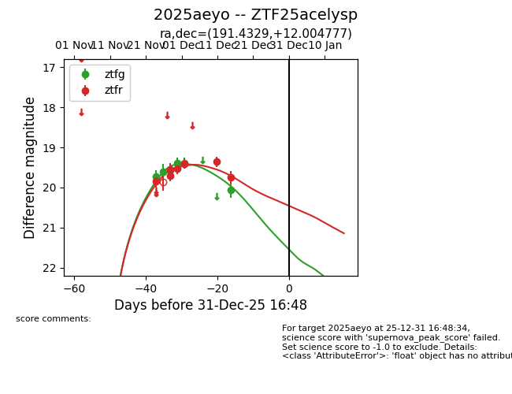
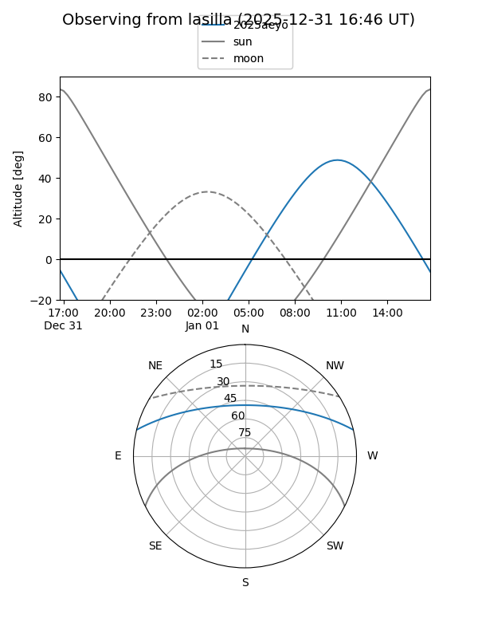
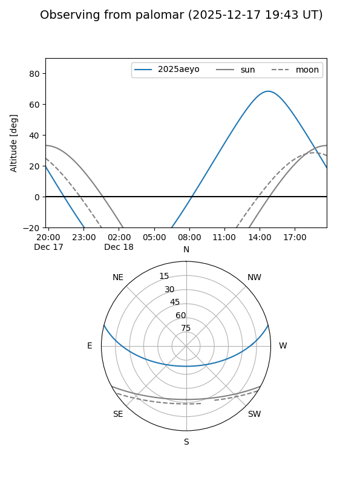
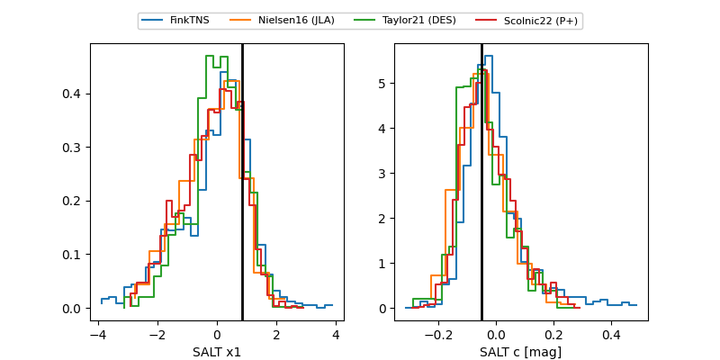

2025aeyo
Target 2025aeyo at 2025-12-31 17:59
Aliases and brokers:
FINK: link
Lasair: link
ALeRCE: link
TNS: link
YSE: link
alt names
ZTF25acelysp (ztf,fink_ztf)
2025aeyo (tns,yse)
Coordinates:
equatorial (ra, dec) = 191.4329,+12.00478
equatorial (HMS+DMS) = 12:45:43.90,+12:00:17.20
galactic (l, b) = (297.5968,+74.81738)
Flags:
Photometry:
last ztfg=20.07, ztfr=19.74
6 ztfg, 7 ztfr detections
Lightcurve

Visibility


Additional plots
